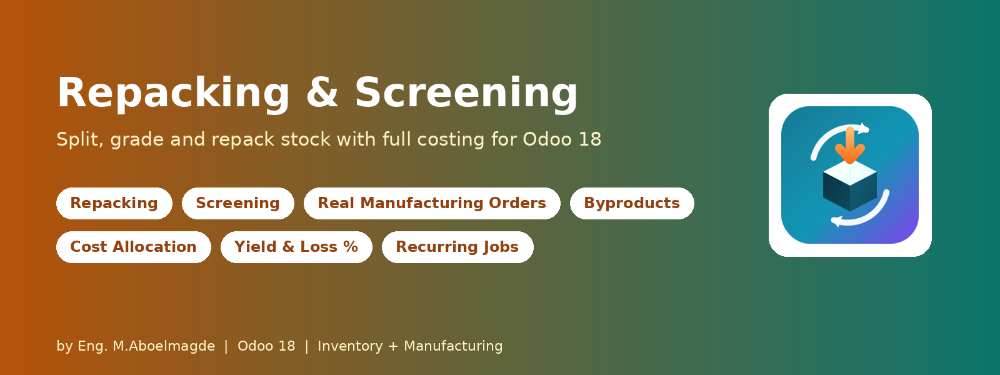
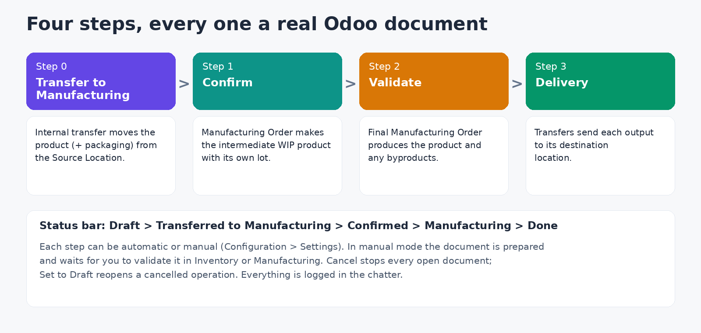
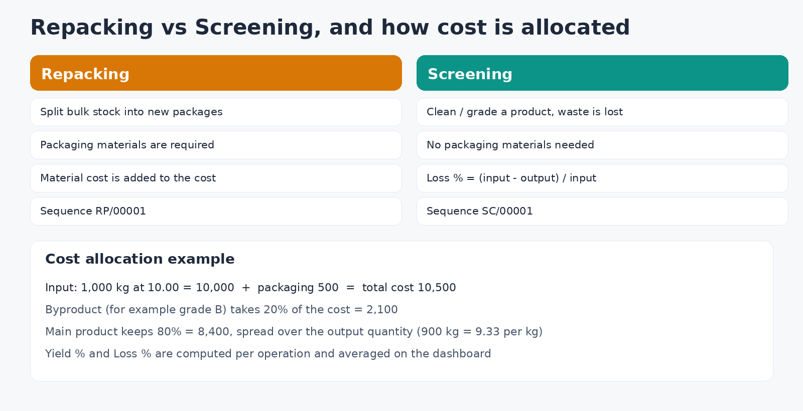
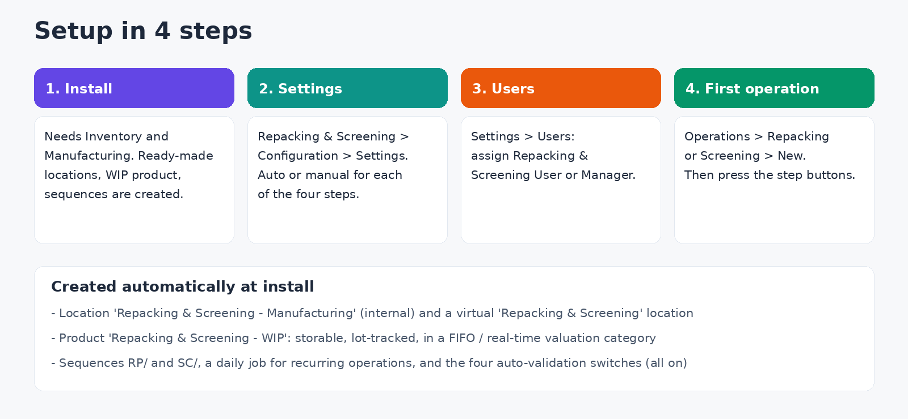

Repack and screen stock without losing track of cost
Packing plants, grain and spice traders, dates and nuts packers and any business that splits bulk stock into packages or cleans and grades a product: this module turns the operation into a guided four-step flow, and every step produces a real Odoo transfer or Manufacturing Order. Stock quantities, lots and valuation stay correct, and you see yield, loss and cost per operation.
Who is it for
- Repacking: split a bulk product (a 1,000 kg sack) into new packages (1 kg bags), consuming packaging materials.
- Screening: clean or grade a product; what does not pass is lost, and optional byproducts (for example grade B) are stored separately.
How it works

- Step 0, Transfer to Manufacturing: an internal transfer moves the input product (and packaging materials, for Repacking) from the Source Location into a dedicated manufacturing location.
- Step 1, Confirm: a Manufacturing Order turns them into an intermediate WIP product that gets its own batch/lot number.
- Step 2, Validate: a second Manufacturing Order consumes the intermediate product and produces the final product plus any byproducts, carrying the cost through.
- Step 3, Delivery: transfers move the final product back to the Source Location and each secondary product to its own "Store In" location.
- Smart buttons on the operation open its transfers and Manufacturing Orders. Cancel stops every open document; Set to Draft reopens a cancelled operation.
Costing and analysis

- Cost analysis tab: input cost (input product and packaging materials at their standard cost), cost assigned to the main product, good quantity, waste quantity, Yield % and Loss %.
- Byproducts: each secondary product takes a percentage of the total cost; the main product keeps the rest.
- WIP product: a ready-made lot-tracked intermediate product in its own FIFO category, so every batch keeps its own cost layer. Automatic valuation journal entries are created when Odoo Accounting is installed.
- Recurring operations: repeat an operation every N days, weeks or months until an end date. A daily job creates the next one as a copy, including packaging, byproducts and quantities.
Dashboard and report
- Clickable KPI cards: Total Operations, Total Input Cost, Average Yield and Average Loss of completed operations.
- Charts: operations by type and by stage, plus a list of recent operations. Light and dark mode.
- Kanban with fixed stage columns, list, form, search with filters and group by.
- Printable Operation Report (PDF) for each operation. Every operation has a chatter and activities.
Configuration guide

Step 1: Install
The module depends on Inventory, Manufacturing and Discuss. On install it creates everything it needs: the internal location "Repacking & Screening - Manufacturing", a virtual "Repacking & Screening" location, the WIP product and category, the RP/ and SC/ sequences, the daily recurrence job and the default settings.
Step 2: Settings (Managers)
Open Repacking & Screening > Configuration > Settings. There is one switch per step; all are on by default, which gives a fully automatic flow. Turn a switch off when you want a person to validate that step in the standard Odoo apps.
| Setting | When ON (default) | When OFF |
|---|
| Step 0: Internal Transfer to Manufacturing Location | The transfer is validated automatically. | The transfer is created, reserved and filled in; validate it in Inventory before you press Confirm. |
| Step 1: Intermediate Manufacturing Order | The Manufacturing Order is marked Done automatically. | Complete it yourself in Manufacturing before pressing Validate. |
| Step 2: Final Manufacturing Order | The Manufacturing Order is marked Done and the delivery step follows automatically. | Complete it in Manufacturing, then press Complete Manufacturing on the operation. |
| Step 3: Manufacturing to Destination(s) | The delivery transfers are validated automatically. | The transfers stay ready in Inventory for you to validate. |
Your choices are kept when you upgrade the module.
Step 3: Users and roles
In Settings > Users, assign Repacking & Screening: User or Manager.
| Action | User | Manager |
|---|
| View, create and edit operations | Yes | Yes |
| Edit packaging, byproducts and lines | Yes | Yes |
| Delete operations | No | Yes |
| Open Configuration and change Settings | View only | Yes |
Operations follow multi-company rules: users only see operations of their allowed companies.
Step 4: Create your first operation
- Go to Operations > Repacking (or Screening) and click New. The reference (RP/00001 or SC/00001) is generated automatically.
- Pick the Source Location, the product and the input quantity, then the output quantity.
- For Repacking, add the Packaging Materials (required). Optionally add Secondary Products with their destination and cost percentage.
- Press Transfer to Manufacturing, then Confirm, then Validate. If a step is set to manual, finish that document first, then press Complete Manufacturing where needed.
- Tick Recurring on the Recurrence tab if the job repeats.
Technical details
- Odoo 18.0, Community and Enterprise. Depends on stock, mrp and mail.
- License: Odoo Proprietary License v1.0 (OPL-1).
- The Operation Report uses Odoo's standard PDF engine (wkhtmltopdf).
- No external Python libraries.
Frequently asked questions
Can I use it without Manufacturing Orders? No. The Manufacturing app is required because steps 1 and 2 are Manufacturing Orders; that is what keeps lots and costs correct.
Why does Confirm say Step 0 is not done? Step 0 is set to manual. Validate the internal transfer in Inventory, or turn on its auto-validation in Settings.
Can one operation produce several outputs? Yes: one main product plus any number of Secondary Products, each with its own quantity, destination and cost share.
Support
Bug-fix updates are included. Installation, configuration and customization support: Eng. M.Aboelmagde (YouTube: Odoo Lab, @odoolab).